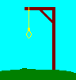

Hangman, classic word guessing game - Help

This version of Hangman is a simple and fast paced game. When starting a new game, you
are prompted to either randomly select a word from a given word list file, or enter a word
manually to use for the game. Then, you'll guess the letters in the word till you have
guessed the word or have had the hangman drawn completely in, normally around 6 guess misses.
Once you fill in all of the letters of the word, via guessing letters or have entered a correct
guess of the word, you win the current game. You then can start a new game and a new word
to guess.
The number of words guessed correctly and number of words not guessed during the current game
session is kept as counters on the screen.
Game Options:
The game of Hangman has several options that can affect behavior. Below is a description of
each option and its effect.
- Prompts On = Turns on yes/no prompts at several points in the game. This is off by default.
- Sounds On = Turns on/off incidental sounds used in the game. Default is off.
- Word List Filename = Name of file that contains the words to be used by the game for player
to guess. Game has two files available, the default one used, containing around 700 english
words, hm_words.txt. The second file, hm_woerter.txt, contains around 2600 words in german.
Can use any other text file containing words, but game defines words using the english
alphabet (26 letters, A - Z). Can either copy/type in a file name (including path) or
select a file using the select file button next to the entry field.
- Difficulty = Can set difficulty to Normal, Easy or Easiest. Default is normal, each wrong
guess draws another piece on the hangman picture. Setting to easy, every other wrong guess
will drawn a new piece to the hangman. Using easiest, every 3 wrong guesses will draw a
new piece to the hangman. Normal gives 6 chances, easy gives 12, while easiest gives 18.
For more information about Hangman and it's variants, see
Wikipedia Hangman.
©2021-2022 Slack & Associates / M. G. Slack